Theme Arena and Description
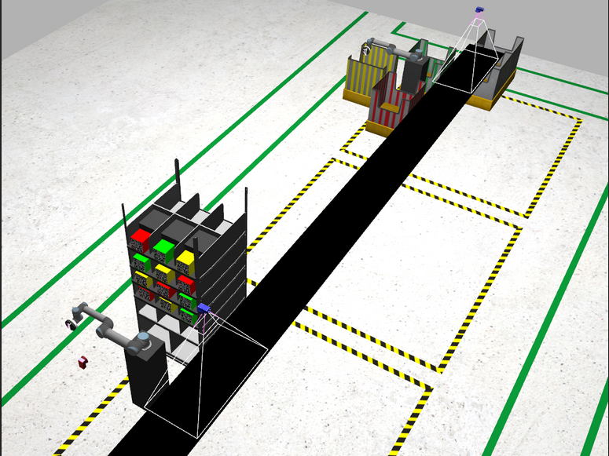
The following are the terms associated with the Theme and Arena:
| Name | Image |
|---|---|
| UR5 Robotic Arm with Vacuum Gripper 1. The warehouse environment consists of two UR5 Arms, which are lightweight industrial robots tackling medium level industry operations with maximum flexibility. The UR5 arms will henceforth be defined as UR5#1 and UR5#2. 2. UR5#1: The first industrial robotic arm is used to pick up objects from the shelf of the warehouse and place it on a conveyor belt. 3. UR5#2: The second industrial robotic arm is placed at the end of the conveyor belt, where there are also three coloured bins matching the colour of the package. The arm picks up the objects from the moving conveyor belt and segregates them in respective bins | 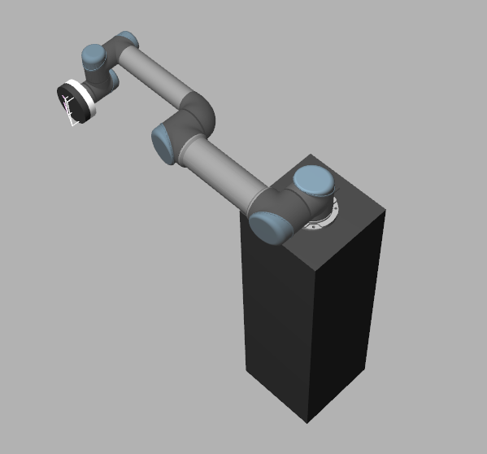 |
| Logical Camera#1 and Logical Camera #2 The logical camera helps the industrial robotic arms identify the packages and segregate them accordingly. A logical camera gives an output of not just the package but also the position of the package in the Gazebo warehouse environment. It shows which models might be visible to the camera in the same location. | 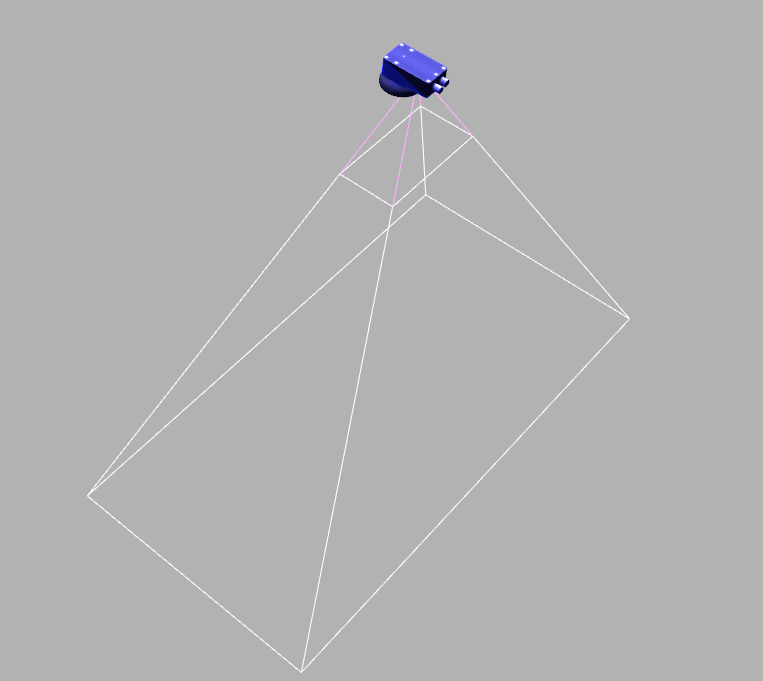 |
| Shelf The Shelf simulation is an abstraction of an inventory shelf in a warehouse. | 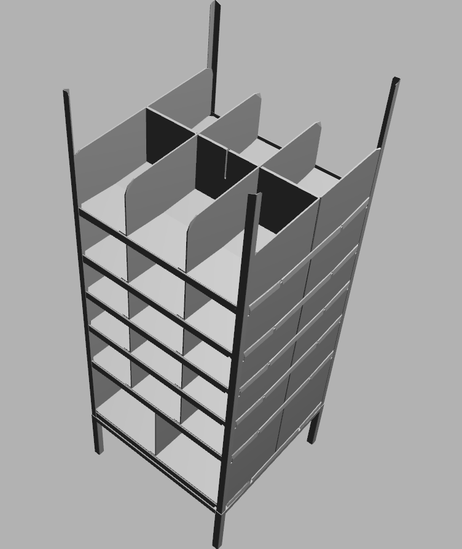 |
| Camera This camera is a 2D camera facing the packages on the shelf. The role of this camera is to use Computer Vision techniques to identify packages on the shelf. | 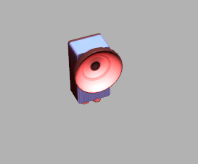 |
| Conveyor Belt The Conveyor Belt is used to transport packages from one part of the warehouse to the other. | 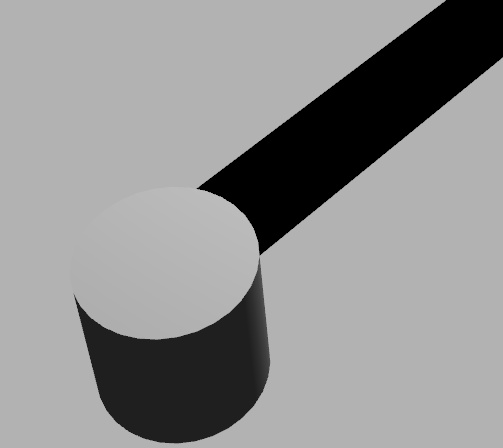 |
| Sorting Bins for High Priority Packages The Red bin is used for sorting the High Priority Packages by the UR5 #2 Arm. | 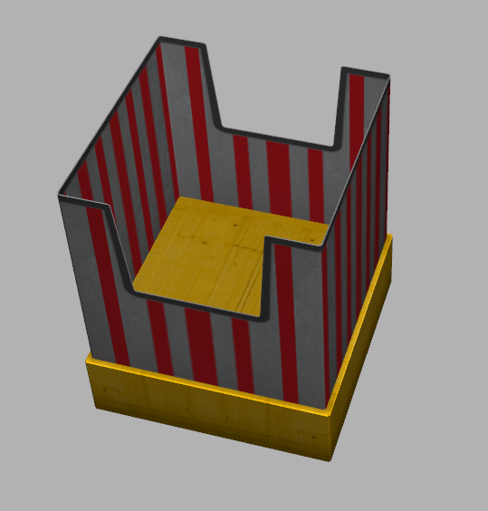 |
| Sorting Bins for Medium Priority Packages The Yellow bin is used for sorting the Medium Priority Packages by the UR5 #2 Arm. | 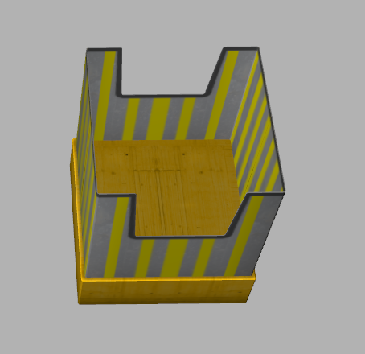 |
| Sorting Bins for Low Priority Packages The Green bin is used for sorting the Low Priority Packages by the UR5 #2 Arm. |  |
| High Priority Package The High Priority Package symbolizes packages such as medicines. | 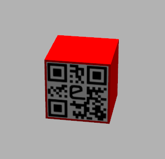 |
| Medium Priority Package The Medium Priority Package symbolizes packages such as packaged food. | 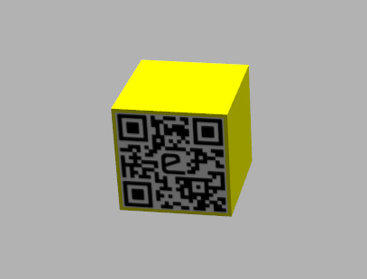 |
| Low Priority Package The Low Priority Package symbolizes packages such as clothes. | 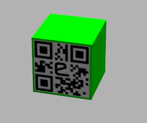 |
Package Classification
Figure 2 can be considered as an example configuration of packages stocked in the warehouse.
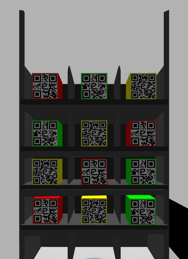
| Storage Number | Item | Description | Package Colour | Priority |
| R0 C0 | First row, left column | Medicines | Red | High |
| R0 C1 | First row, middle column | Clothes | Green | Low |
| R0 C2 | First row, right column | Packaged Food | Yellow | Medium |
| R1 C0 | Second row, left column | Clothes | Green | Low |
| R1 C1 | Second row, middle column | Packaged Food | Yellow | Medium |
| R1 C2 | Second row, right column | Medicines | Red | High |
| R2 C0 | Third row, left column | Packaged Food | Yellow | Medium |
| R2 C1 | Third row, middle column | Medicines | Red | High |
| R2 C2 | Third row, right column | Clothes | Green | Low |
| R3 C0 | Fourth row, left column | Medicines | Red | High |
| R3 C1 | Fourth row, middle column | Packaged Food | Yellow | Medium |
| R3 C2 | Fourth row, right column | Clothes | Green | Low |
Inventory Management System
-
Inventory Management Spreadsheet
Teams will have to use a Google Spreadsheet to manage inventory. Since it is an Automated Warehouse, the warehouse will have direct access to this spreadsheet. Using the ROS-IoT Bridge, the warehouse will be able to update this spreadsheet automatically without any human intervention.
This spreadsheet should have the following sheets:
- Inventory:
-
This sheet should contain details of all the packages that are spawned on the shelf.
-
The required Inventory Spreadsheet Example Configuration can be seen in Fig 3. and Table 2.
Table 2: Inventory Spreadsheet Description Table
| Google Spreadsheet Columns | Description |
| Timestamp | This column will represent the timestamp at which data is updated into the Inventory Management Spreadsheet |
| Team Id | This column will represent the Team IDs |
| Unique Id | This column will represent the unique-id for MQTT provided by your team in Task 1 |
| SKU | This column represents the “Stock Keeping Unit”, the format of SKU will be as follows:
If the package is of ‘red’ colour, kept in storage number ‘12’ and the month is January 2021, the SKU will be : R120121 |
| Item | This column represents the package item, refer to Table 1 for more information |
| Priority | This column denotes the priority of the package, refer to Table 1 for more information |
| Storage Number | This column denotes the storage number of the package, refer to Table 1 for more information |
| Cost | This column represents the cost of the item. This can be defined as per the team's choice. High Priority Packages should have the highest prices, followed by Medium Priority and the Low Priority. |
| Quantity | This column represents the quantity of the package in the warehouse inventory |
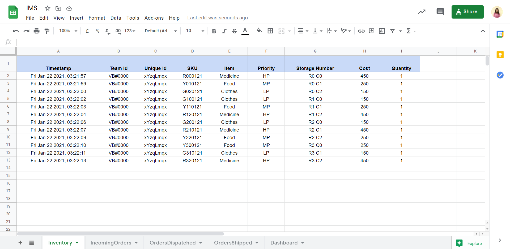
-
Incoming Orders: This sheet will have a record of all incoming orders.
-
The team will have to update this sheet when the details of customer orders are sent to the warehouse via a configuration script.
-
The teams will update this spreadsheet once the warehouse receives the order for the packages through an MQTT Protocol.
-
The Incoming Orders Example Configuration Spreadsheet can be seen in Fig 4. and Table 3.
Table 3. Incoming Orders Description Table
-
| Google Spreadsheet Column | Description |
| Timestamp | This column represents the timestamp at which data is updated into the Inventory Management Spreadsheet |
| Team Id | This column will represent the Team IDs |
| Unique Id | This column will represent the unique-id for MQTT provided by your team in Task 1 |
| Order ID | This column represents the Order ID of the package |
| Order Date and Time | This column represents the time at which the warehouse receives the order through the MQTT Protocol. The format of this column will be similar to Timestamp |
| Item | This column represents the package item, refer to Table 1 for more information |
| Priority | This column represents the priority of the package, refer to Table 1 for more information |
| Order Quantity | This column represents the quantity of orders coming into the warehouse |
| City | This column represents the cost of the item. This can be defined as per the team's choice. High Priority Packages should have the highest prices, followed by Medium Priority and the Low Priority. |
| Longitude | This column represents the longitude of the city |
| Latitude | This column represents the latitude of the city |
| Cost | This column represents the cost of the item |
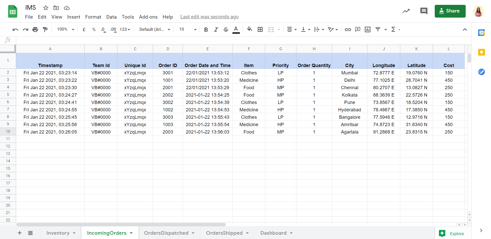
- Dispatch :
-
The teams will have to update this sheet once the UR5#1 picks the package from the shelf and places it on the conveyor belt.
-
The Orders Dispatched Example Configuration Spreadsheet can be seen in Fig. 5 and Table. 4
Table 4. Orders Dispatched Description Table
| Google Spreadsheet Column | Description |
| Timestamp | This column represents the timestamp at which data is updated into the Inventory Management Spreadsheet |
| Team Id | This column will represent the Team IDs |
| Unique Id | This column will represent the unique-id for MQTT provided by your team in Task 1 |
| Order ID | This column represents the Order ID of the package |
| City | This column represents the city of incoming orders |
| Item | This column represents the package item, refer to Table 1 for more information |
| Priority | This column represents the priority of the package, refer to Table 1 for more information |
| Dispatch Quantity | This column represents the dispatch quantities of the packages in the warehouse inventory. This column is updated as the UR5#1 Arm picks the package from the shelf and places it on the conveyor belt |
| Cost | This column represents the cost of the item. This can be defined as per the team's choice. High Priority Packages should have the highest prices, followed by Medium Priority and the Low Priority. |
| Dispatch Status | This column represents the status of dispatch. This column should be updated by the teams as “Yes” once the order is dispatched. |
| Dispatch Date and Time | This column represents the date and time in which the packages are dispatched. The format of this column is similar to Timestamp. |
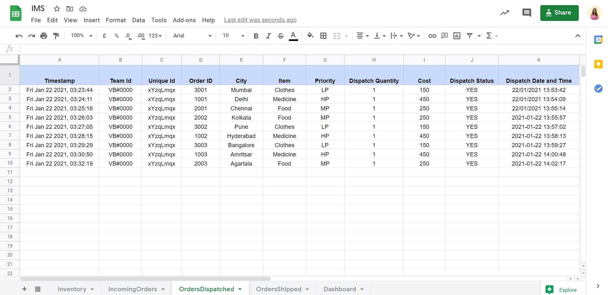
- Shipped:
-
The teams will have to update this sheet once the UR5#2 picks the package from the conveyor belt and places it into the priority corresponding bins.
-
The Orders Shipped Example Configuration Spreadsheet can be seen in Fig. 6 and Table. 5
Table 5. Orders Shipped Description Table
Google Spreadsheet Column Description Timestamp This column represents the timestamp at which data is updated into the Inventory Management Spreadsheet Team Id This column will represent the Team IDs Unique Id This column will represent the unique-id for MQTT provided by your team in Task 1 Order ID This column represents the Order ID of the package City This column represents the city of incoming orders Item This column represents the priority of the package, refer to Table 1 for more information Priority This column represents the priority of the package, refer to Table 1 for more information Shipped Quantity This column represents the shipped quantities of the packages in the warehouse inventory. This column will be updated as the UR5#2 Arm picks the package from the conveyor belt and places it into priority corresponding bins. Cost This column represents the cost of the item. This can be defined as per the team's choice. High Priority Packages should have the highest prices, followed by Medium Priority and the Low Priority. Shipped Status This column represents the status of shipment. This column should be updated by the teams as “Yes” once the order is shipped. Shipped Date and Time This column represents the date and time in which the packages are shipped. The format of this column will be similar to Timestamp Estimated Time of Delivery This column indicates the time taken for the package to reach the customer through a drone delivery. This will vary depending on the priority of the package, the Estimated Time of Delivery will be 1 day for High Priority Packages, 3 days for Medium Priority Packages and 5 days for Low Priority Packages
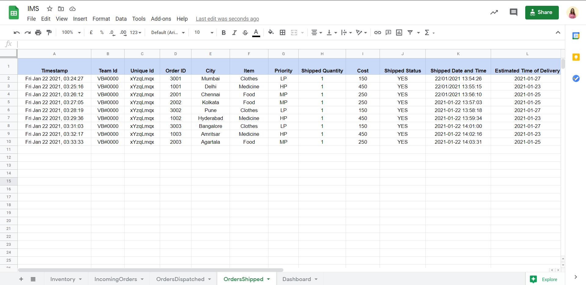
5. Dashboard: This sheet should consist of graphical analysis of the Inventory Processes. Teams will update this sheet based on their choice of parameters to include for designing a dynamic dashboard. The Fig. 7 can be considered as an example of various features for the Dashboard Spreadsheet.
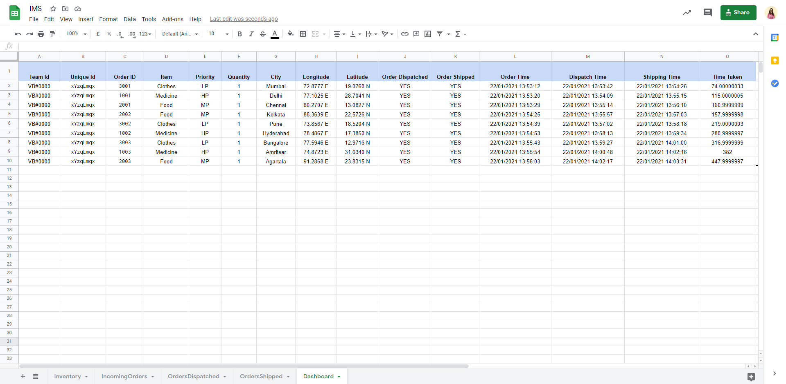
- Notification Engine
Through this notification engine, customers will receive email notifications on the status of their order. Teams will use Google Apps Script to develop this notification engine. For finals, Teams will have to send all email notifications to the following email addresses:
The email notification should be followed as seen in Figure. 8 and Figure. 9
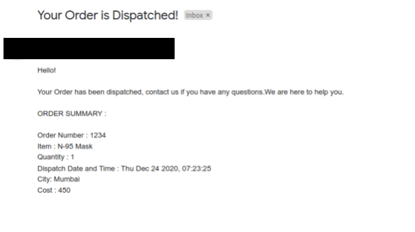
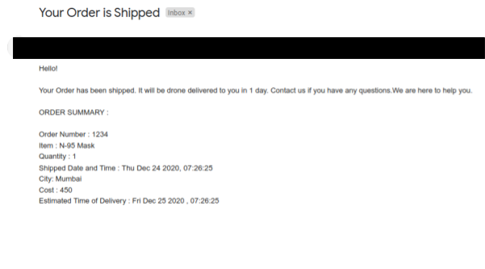
3. Warehouse Dashboard
Teams need to host a Dashboard on Github Pages which shows the status of the orders in real-time. Following three things should be present in the dashboard but teams are free to add more things and customize the dashboard the way they want.
Teams will be awarded 50 points based on how creatively they create their dashboard. Examples given below are for reference.
NOTE: Points will be awarded for Dashboard also at the finals.
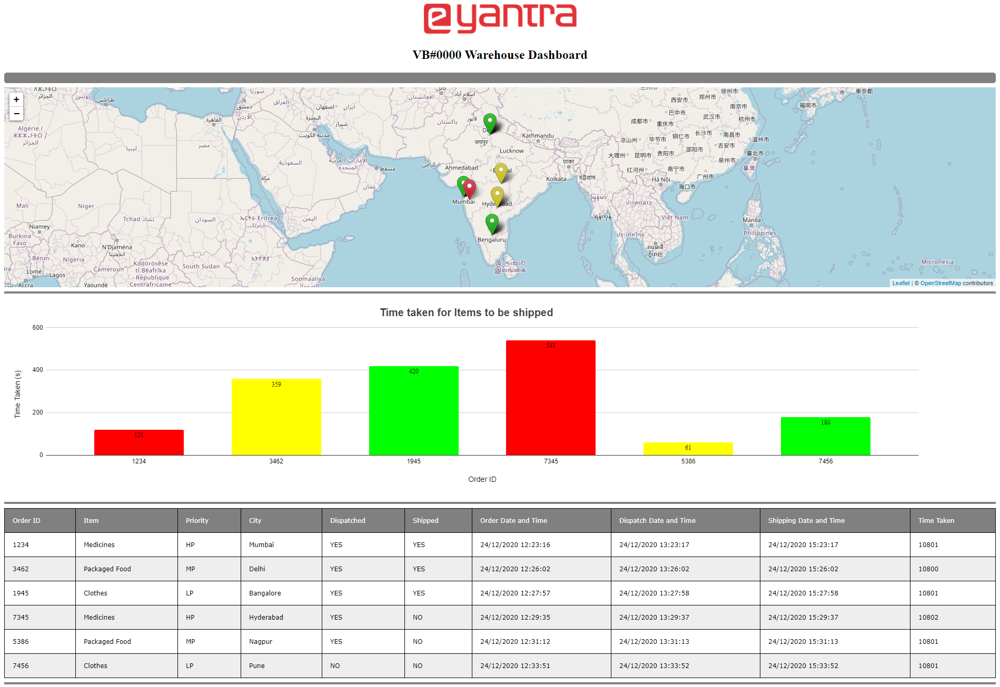
The dashboard will be divided into the following three parts :
- Geolocation showing information about Inventory order
-
The coloured markers on the map in Fig indicate the following :
Green Marker If the order is Dispatched as well as Shipped Yellow Marker If the order is Dispatched and not Shipped Red Marker If the order is neither Dispatched nor Shipped -
In Fig 11 , when you click on the marker of the city, you will see the Order ID, Dispatched Status and the Shipped Status of the order as well as the City name will be shown.
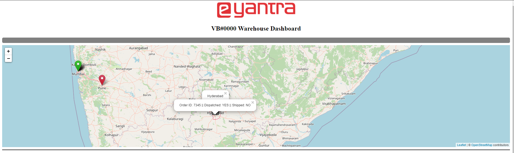
-
Table showing the live status of the orders in the dashboard which includes the following information:
| Table Column | Description |
| Order ID | This column represents the Order ID of the package |
| Item | This column represents the package item, refer to Table 1. Package Configuration |
| Priority | Refer to Table 1, this column represents the priority of the package, refer to Table 1. Package Configuration |
| City | This column represents the origin city of incoming orders |
| Dispatched | This column will represent the status of dispatch. This column should be updated by the teams as “Yes” or “No”. If Dispatch Quantity is updated in the Orders Dispatched sheet, then the Dispatch Status should be updated as “Yes” or else the status is “No” |
| Shipped | This column will represent the status of the shipment. This column should be updated by the teams as “Yes” or “No”. If the Shipped Quantity is updated in the Orders Shipped sheet, then the Shipped Status should be updated as “Yes” or else the status is “No” |
| Order Date and Time | This column represents the time at which the warehouse receives the order through the MQTT Protocol. The format of this column will be similar to Timestamp |
| Dispatch Date and Time | This column represents the date and time in which the packages are dispatched. The format of this column will be similar to Timestamp |
| Shipped Date and Time | This column represents the date and time in which the packages are shipped. The format of this column will be similar to Timestamp |
| Time Taken | This column is the time taken for the order i.e. [Shipping Time - Order Time] in seconds |
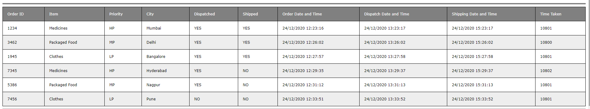
- Graph showing the status of time taken for each order :
-
This graph will indicate the amount of time taken for each order to be shipped. The X-Axis legend will indicate the Order ID of the package and the Y-Axis legend indicates the Time taken in seconds.
-
The bar of red colour indicates the package is of a High Priority Order
-
The bar of yellow colour indicates the package is of a Medium Priority Order
-
The bar of green colour indicates the package is of a Low Priority order
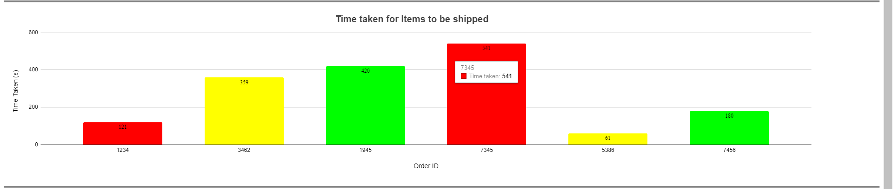
Fig 13. Graph for Vargi-Bots Warehouse Dashboard
ROS - IoT Bridge
In order to make the warehouse in Gazebo a two-way communication with cloud servers, teams would have to develop this using ROS. Using this warehouse you will be able to,
-
Published on a MQTT Topic
-
Subscribe to a MQTT Topic
-
Created HTTP requests.
This will enable the warehouse to receive online orders by subscribing to the following MQTT Topic:
/eyrc/vb/<unique-id>/orders
<unique-id>: This is a private ID which will be the eight character string created by the teams during Task-1.
This will also enable the warehouse to update the Inventory Management Spreadsheet using HTTP requests.